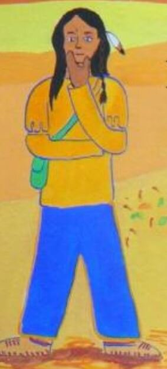

I want to tell an old history about Napi. Napi chose a large area of land, East of the Rockies. He put on there, all the different animals that walk on mother Earth, the water animals, the ones that fly.

He built the rivers and landmarks in this area and they were all named in Blackfoot. When He came to build, put the buffalo on Mother Earth, all the rest would kill another, eat one another. “But the buffalo,” He said to himself, “I should put on Mother Earth, people similar to me, so they can make use of the buffalo.” This natural area had natural boundaries.
To the South was the Yellowstone River and to the West was the Rocky Mountains, as far North as the Saskatchewan River, East to the Cyprus Hills. Now He knew all the areas and when He put the buffalo on Mother Earth, He built, He put everything in twos, the male and female. So the buffalo had a male and a female. And to the same area where he molded the different animals, He took clay, he molded it into a person.
He opened its mouth and blew into it. It started breathing. He already tanned some hides for the breech cloth, leggings and shirt. And as they were walking away, He was to be able to communicate with all the different animals. And He communicated with the man. And He figured: “I made all the animals in pairs. Let’s go back to that clay and I’ll make the woman.” So they went back to the clay and they molded a woman, clothed her with buck skin.